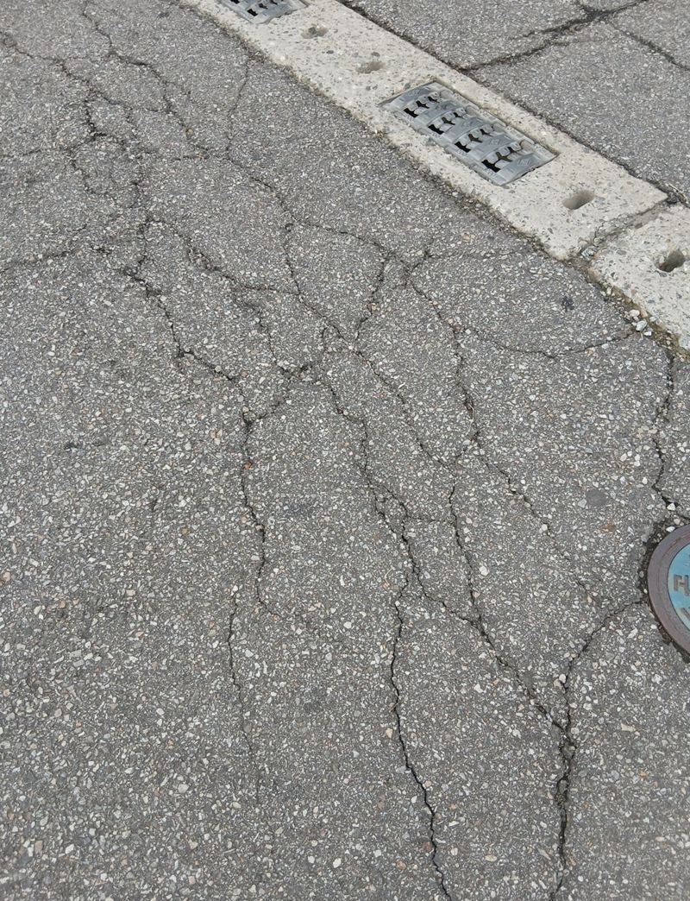
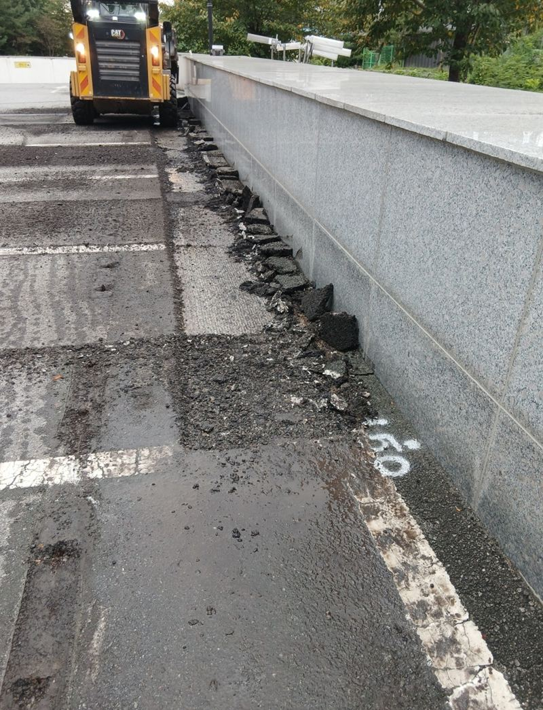
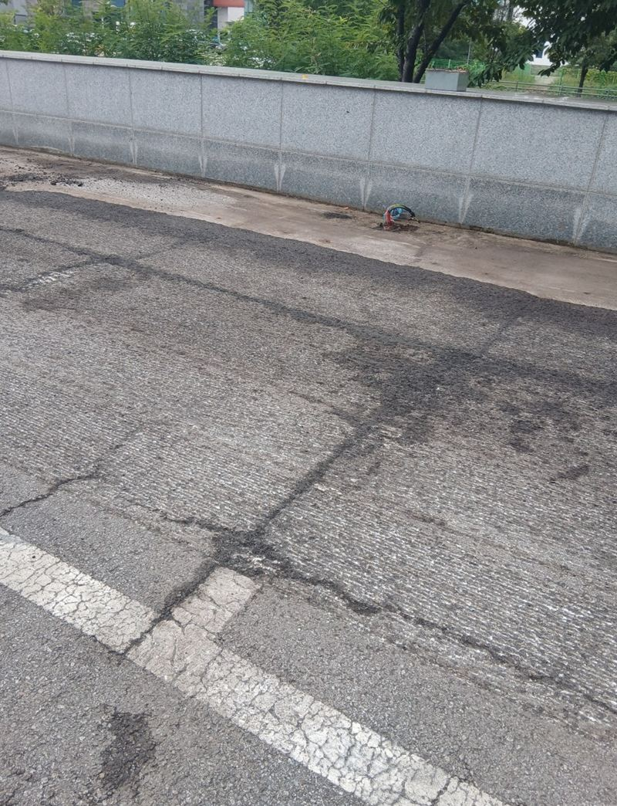
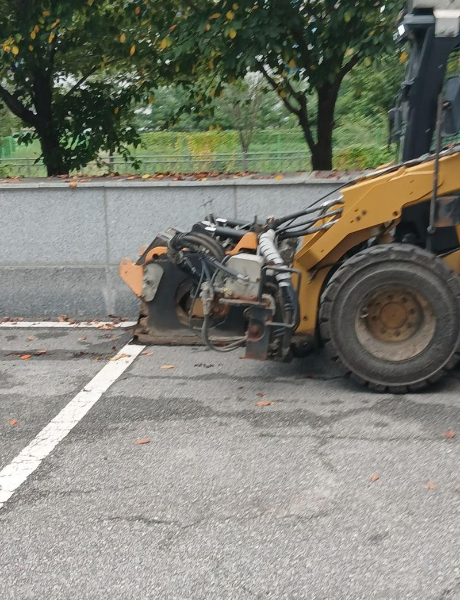
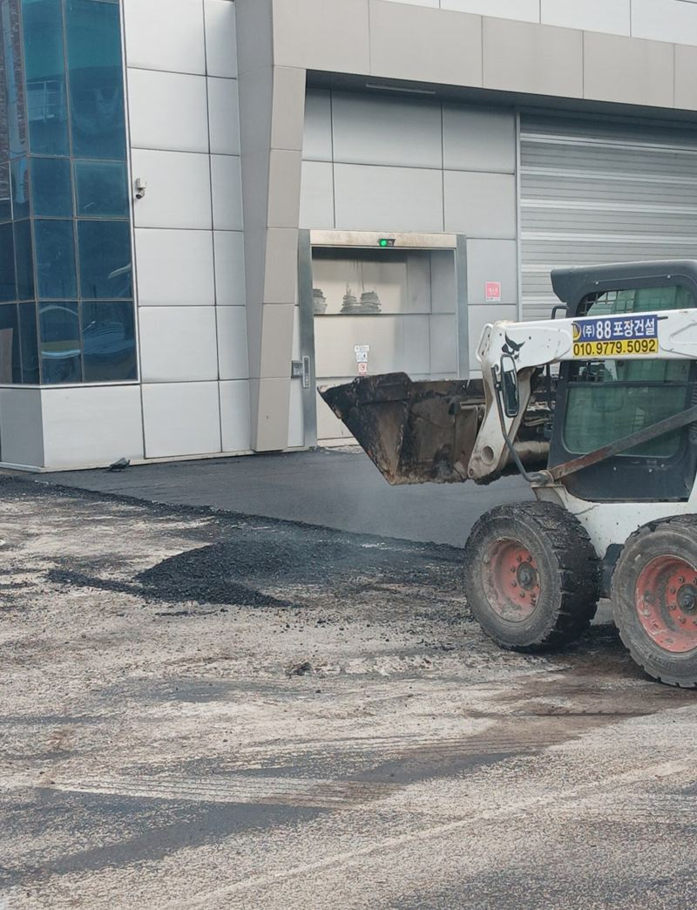
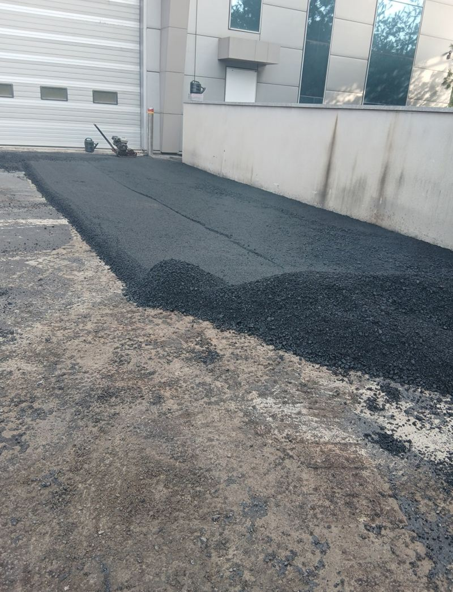
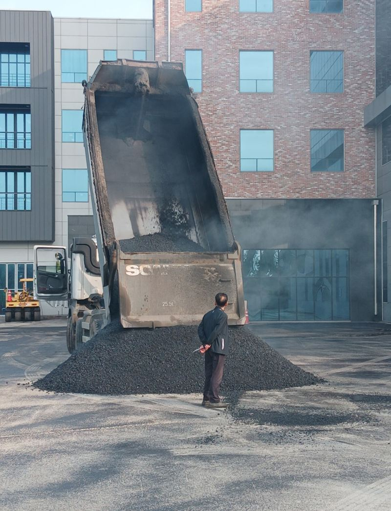

군포 도로 갈라짐·처짐 복구 공사 방법

 복구 전복구 후
복구 전복구 후← 밀어서 전후 비교 →
"비 오면 물이 고이고, 겨울엔 그게 얼어서 직원들이 미끄러져요." 오래된 회사 주차장 아스팔트가 거미줄처럼 갈라지고 군데군데 내려앉아 있었어요. 위에 한 겹 덮는 대신, 상한 구간을 걷어 내고 바닥부터 다시 포장했어요.
| 현장 | 군포 회사 주차장과 통행로 |
|---|---|
| 증상 | 표면 갈라짐, 부분 침하, 단차, 물 고임과 겨울 결빙 |
| 한 일 | 손상 구간 표시 → 절삭·파쇄 → 기층 다짐 → 프라이밍 → 2단 아스콘 → 주차선 도색 |
| 규모 | 여러 날에 걸친 공사로 인원과 장비가 함께 들어갔어요 |
덧씌우기로는 다시 갈라지는 이유
갈라진 아스팔트 위에 새 아스콘만 얇게 덮으면, 아래 금이 그대로 위로 올라와 몇 계절 만에 같은 모양으로 다시 갈라져요. 그래서 먼저 손상을 표면 균열, 부분 침하, 단차로 나눠 구역을 표시하고, 상한 부분만 정확히 깎아 내 새로 포장하기로 했어요. 멀쩡한 구간까지 깎지 않으니 공사 범위도 줄어요.


걷어 내고, 다지고, 두 번 깔기
손상 아스콘 철거
절삭기로 자르고 파쇄기로 걷어 낸 뒤 폐기물은 따로 담아 처리했어요. 바닥을 드러내 보니 물이 고였던 구간은 아래 기층까지 약해져 있었어요.

기층 다짐
약해진 기층을 콤팩터로 다시 다졌어요. 아래가 무르면 새 포장도 금방 내려앉아요.
프라이밍
새 아스콘이 바닥에 단단히 붙도록 접착 역할을 하는 프라이머를 고르게 뿌렸어요.

기층용·마감용 아스콘 포설
먼저 기층용 아스콘을 깔고 롤러로 충분히 다진 다음, 마감용 아스콘을 고르게 펴서 한 번 더 다졌어요. 아스콘은 온도와 다짐이 품질을 정해서 식기 전에 평탄도를 맞추는 게 핵심이에요.


주차선은 완전히 식은 뒤에
아스콘이 덜 식은 상태에서 도색하면 페인트가 번지고 금방 벗겨져요. 표면이 완전히 식은 다음 주차 칸과 통행 구역 라인을 새로 칠했어요. 마지막으로 물을 흘려 배수 방향을 확인하고 고이는 곳이 없는지 살폈어요.
이런 주차장이면 복구를 고민하세요
- 비 온 뒤 며칠씩 물이 안 빠져요바닥이 내려앉아 물길이 막힌 거예요. 겨울엔 그대로 빙판이 돼요.
- 갈라진 틈에서 풀이 자라요틈이 깊어졌다는 뜻이에요. 물이 스며 기층까지 약해져요.
- 차가 지날 때 덜컹거리는 턱이 있어요부분 침하로 생긴 단차예요. 부분 재포장으로 맞출 수 있어요.
- 주차선이 거의 지워졌어요포장 상태가 괜찮다면 도색만 새로 해도 돼요.
도로·주차장 복구 질문
공사 기간 동안 주차는 어떻게 하나요?
구역을 나눠 순서대로 공사하면 일부는 계속 쓸 수 있어요. 출퇴근 시간과 차량 동선을 듣고 일정을 짜요.
부분만 재포장하면 이음선이 보이지 않나요?
새 아스콘은 처음엔 색이 진해서 구분돼요. 시간이 지나면 주변과 비슷하게 바래요.
작은 구멍 몇 개만 메울 수도 있나요?
네, 땅꺼짐이나 포트홀 몇 곳만 메우는 부분 보수도 해요. 범위가 넓을 때 이번처럼 재포장을 권해요.
콘크리트 바닥도 같은 방식인가요?
콘크리트는 깨진 구간을 걷어 내고 다시 타설하는 방식이라 공정이 달라요. 바닥 재질 사진을 보내 주세요.
비용은 무엇으로 정해지나요?
복구 면적, 절삭 깊이, 기층 보강 여부, 도색 범위, 장비 투입 일수에 따라 달라져요.
공장·물류센터 바닥도 하나요?
지게차나 화물차가 다니는 바닥은 두께를 더 두껍게 잡아야 해서, 쓰임을 듣고 방법을 정해요.
다른 바닥 보수 현장
- 은평 주차장 땅꺼짐 구멍 시멘트·아스콘 보수
- 용인 기흥 시멘트 패드 소형 거푸집 설치 방법
- 인천 미추홀 내려앉은 보도블럭 재시공 견적
- 양평 보도블럭 교체 공사 방법과 순서
- 인천 연수구 콘크리트 시멘트 메꿈 작업 비용
- 용산 콘크리트 내외벽 균열 방수 페인트 시공 방법
- 천안 매립 콘크리트 패드 설치 방법 · 블로그
- 강서 지하주차장 콘크리트 벽면·천장 복원 방법 · 블로그
- 김포 주차장 맨홀 주변 땅꺼짐 몰탈 보수 방법 · 블로그
- 김포 소형 싱크홀 아스콘 부분 보수 방법 · 블로그
- 군포 주차장 바닥 주차선 도색 비용과 순서 · 블로그
- 서초 아스팔트 콘크리트 꺼짐 보수 공사 방법 · 블로그
주차장 전체 사진과 갈라지거나 꺼진 구간을 찍어 보내 주세요.
전화 상담 010-4517-9872